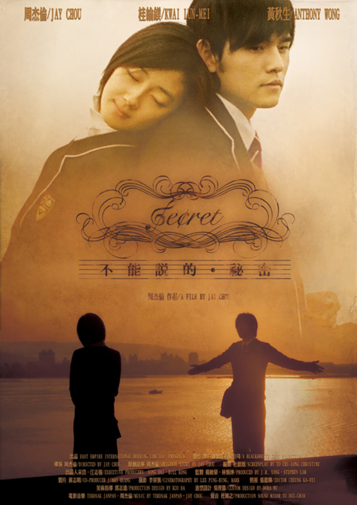

不能说的秘密
导演: 杰伦
编剧: 周杰伦 / 杜致朗
主演: 周杰伦 / 桂纶镁 / 黄秋生 / 曾恺玹 / 苏明明 / 更多...
类型: 爱情 / 音乐 / 奇幻
制片国家/地区: 中国香港 / 中国台湾
语言: 汉语普通话 / 英语
上映日期: 2007-07-31(中国大陆) / 2007-07-27(中国台湾)
片长: 101分钟
又名: Secret
IMDb: tt1037850
剧情简介·······
叶湘伦（周杰伦 饰）是淡江艺术高中的一名插班生，父亲（黄秋生 饰）是该校的一名教师。这天同学晴依（曾恺玹 饰）带他参观学校，接着他独自来到了学校的旧琴房，本身弹得一首好曲的他被某处传来的一首钢琴曲吸引住了。他来到其中一间旧琴房，遇到了路小雨（桂纶镁 饰），纯纯的爱情故事由此发生了。一直以来，叶湘伦都觉得小雨充满了神秘，却无法进一步了解她。叶湘伦约小雨到琴房见面，叶湘伦以为晴依是小雨，跟晴依接吻时被小雨看到，自此之后叶湘伦就没有再看到小雨。叶湘伦到处寻找小雨，发现了那个小雨所说“不能说的秘密”的全部真相